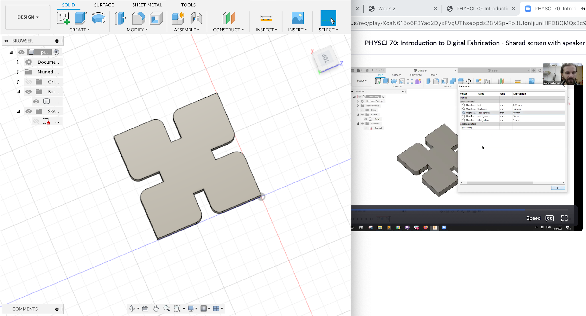
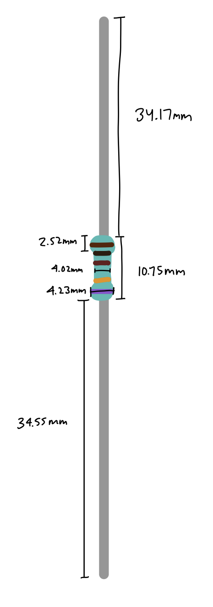
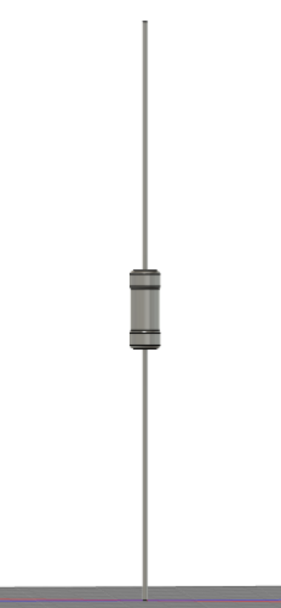
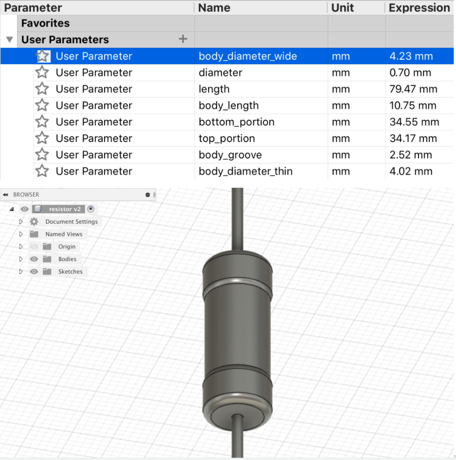
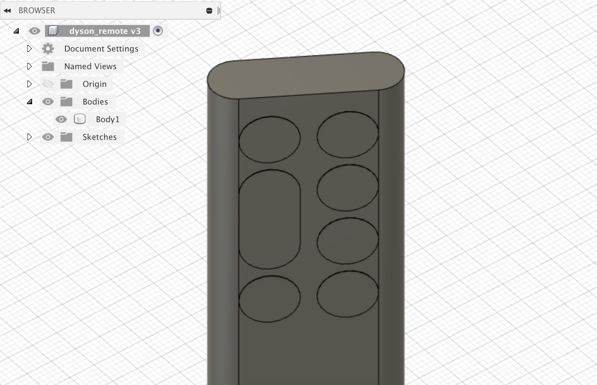
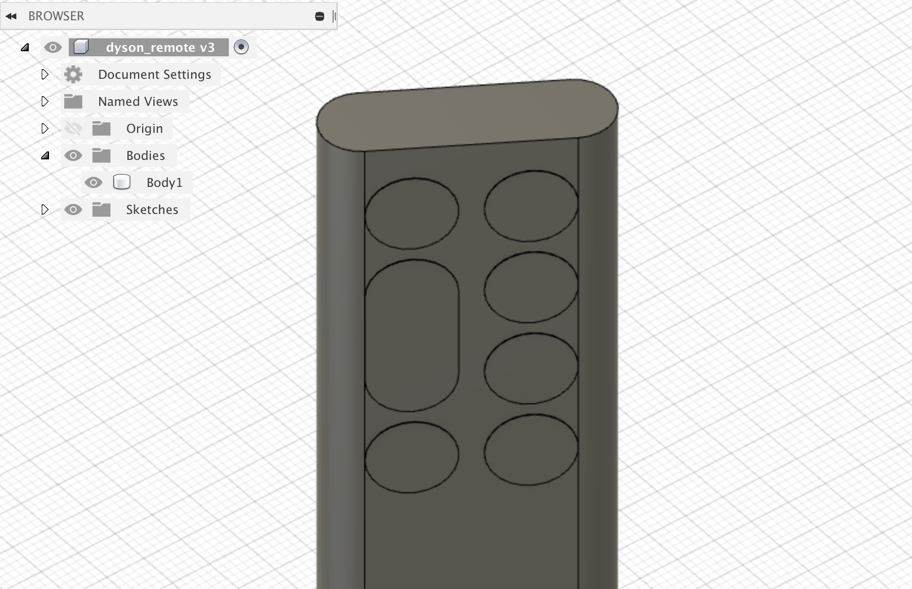
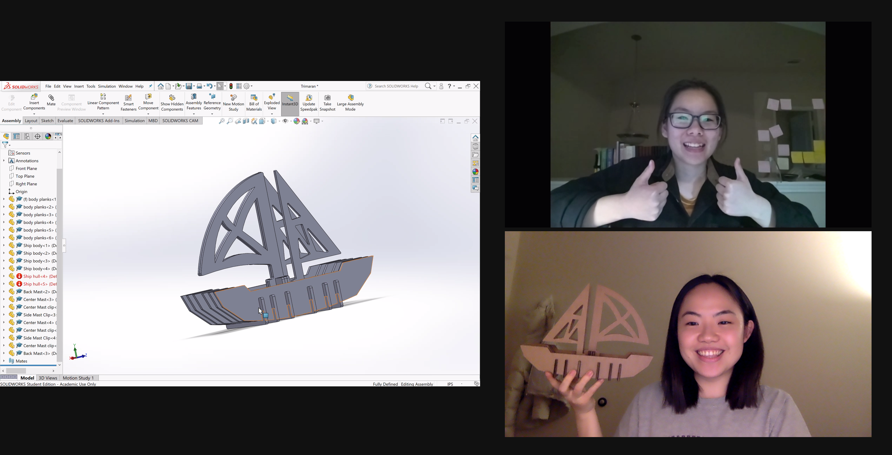
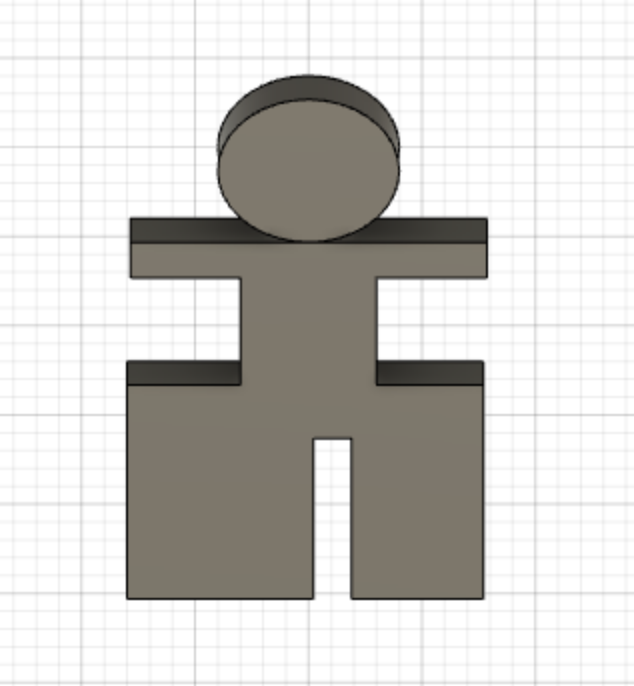
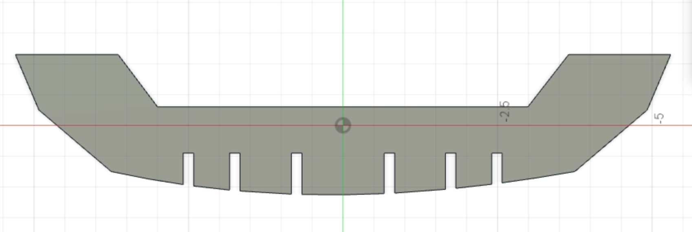

Week 2: Design & Cutting
Intro to Fusion 360
This was my first time using a modeling software, so unsurprisingly, the learning curve has been steep. I attended lab on Friday, where Nathan went over sketching in 2D, extruding (making the 2D sketch in to a 3D representation), fillets (making corners/edges rounder), and chamfers (making corners/edges angled). I wasn't able to follow along the whole time as using the interface went a bit over my head at first, but after rewatching the Zoom recording (with a lot of pausing and rewinding), I was able to recreate the simple object from the tutorial.

Modeling Kit Components
I think the hardest part about learning Fusion 360 for me was reconciling how I expected to build something with how it was actually possible in Fusion 360. For example, the first thing I chose to model was a resistor. In my head, I thought I could simply build a long wire and a separate body and somehow drag the body to the middle of the wire to create the resistor, but this was not the case. (Maybe there is a way to do it this way; I just couldn't find it.) I eventually learned that the easiest way to model something like a resistor was using the extrusion technique I learned in the beginning. Measuring was a bit tricky since the resistor is so thin, but using the caliper, I measured the thicknesses of the wire, the cap ends, and the core, as well as the total length and the length of each section. The way I measured actually lended itself to the extrusion technique. I could simply create 2D circles with the thickness as the diameter and extrude by the length I had measured of each section.
  For my second object, instead of choosing another component from the kit, I actually decided to model the remote control for my air purifier. The most interesting feature is its slight curvature. While I was able to build a non-curved version of the remote by first creating a 2D sketch of two circles connected by parallel lines and extruding it as well as adding the buttons on the 3D surface, I wasn't able to get the curvature I wanted. I thought that if I could get one of the parallel lines to curve slightly upwards, it would let everything else curve by the same amount since it had the parallel constraint, but this did not work. I think if I use a spline and extrude this, I can use this object as the extrude start instead of the normal profile plane. This is something I will try this weekend. Updates to come!
 

Press-fit construction kit
For the group press-fit construction kit assignment, I worked with Joy and Kathryn. While Kathryn and I weren't able to finish our pieces for Joy's ship idea in time for Sunday printing, it was useful seeing the pieces made by someone with more experience (Joy had used SolidWorks in another class). On Monday I picked up the pieces Nathan printed for us and got on a Zoom call with Joy (unfortunately Kathryn couldn't join) to assemble it. At first I was scared of accidentally breaking the pieces, so I was being really careful when pushing them in, but they turned out to be sturdier than I thought. The fit in some of the places were a little too tight, but I think it's better than if it was slightly too loose.



Ship Pieces
While I didn't get it printed, I designed some people for our ship! Because of the spaces created by the ship body pieces and the planks, my design ended up being a bit awkward (I made it so that its legs could go in the spaces between the planks so that the legs ended up being the same width as the teeth on the ship body piece which weren't even). I think later on, it would be worth creating a sort of platform for the person to stand on, hopefully with normal legs.
 